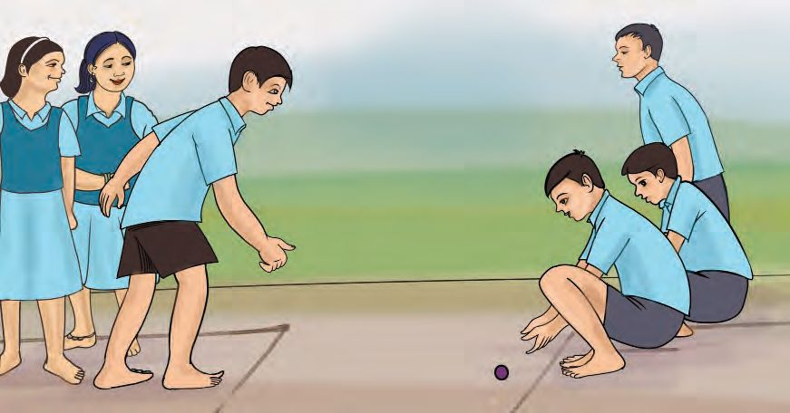
Figure fig_ch05_p061_01 (Page 61)
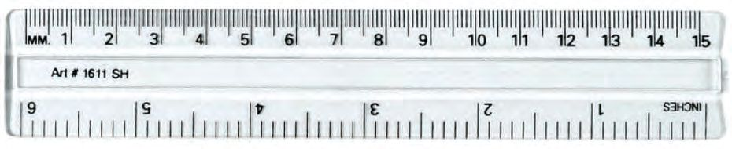
Figure fig_ch05_p061_02 (Page 61)
5
അള ുകുറി
േഗാലി ഉരു ാം
അലനും കൂ ുകാരും േഗാലി ഉരു ി കളി
ുകയാണ്.
േഗാലി ഉരു ിയ ദൂരം അലനും കൂ ുകാരനും കാ ാദം
െകാ ് അള ു. ര ുേപർ ും ഒേര അളവ
കി ിയത്. അവർ തെ ആ
ം പരിഹരി ു.
എ െനയായിരി ും ?
െ യിലിെല അളവ്
നി ളും െ യിൽ എടു ൂ... എെ ാെ
വിവര ളാണ് െ യിലിൽ ഉ ത് ?
• െചറിയ വരകളു
•
•
•
•
•
•
്.
ാം
 Figure fig_ch05_p062_01 (Page 62)
Figure fig_ch05_p062_01 (Page 62)
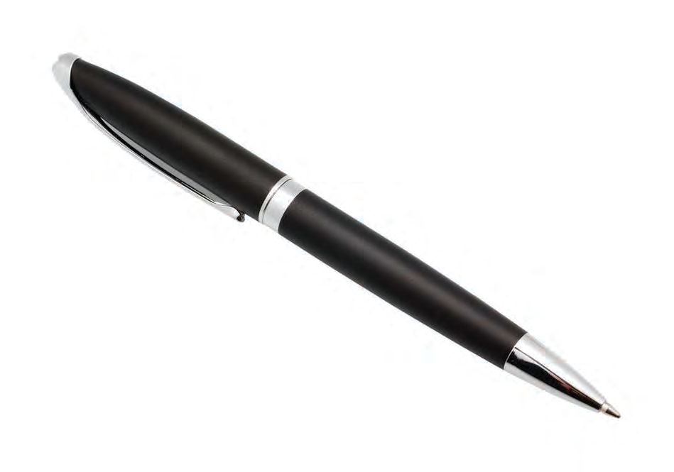
Figure fig_ch05_p062_02 (Page 62)
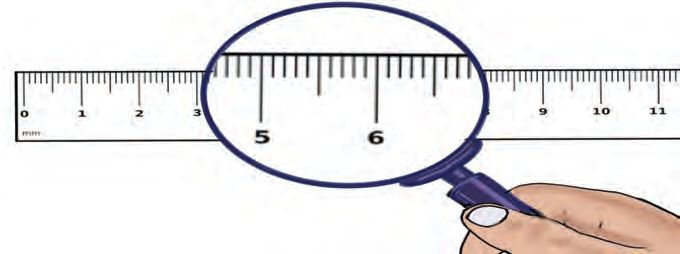
Figure fig_ch05_p062_03 (Page 62)
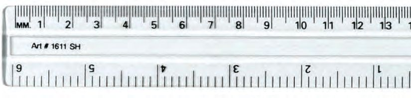
Figure fig_ch05_p062_04 (Page 62)
Figure fig_ch05_p062_05 (Page 62)
Figure fig_ch05_p062_06 (Page 62)
Figure fig_ch05_p062_07 (Page 62)
Figure fig_ch05_p062_08 (Page 62)
Figure fig_ch05_p062_09 (Page 62)
Figure fig_ch05_p062_10 (Page 62)
Figure fig_ch05_p062_11 (Page 62)
Figure fig_ch05_p062_12 (Page 62)
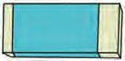
Figure fig_ch05_p062_13 (Page 62)
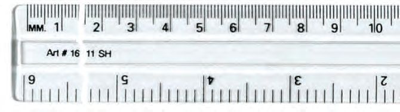
Figure fig_ch05_p062_14 (Page 62)
ാൻേഡർഡ് - III
ഗണിതം
അടു ടു
ര ്
വലിയ വരകh ിട
യിലു അകലം
1 െസ ിമീ h ആണ്.
നീളം അള
ാം
േപനയുെട നീളം
െപൻസിലിെ
നീളം
റ hക യുെട
നീളം
സ്െകയിലിൽ െസ ിമീ ർ അടയാള
െ ടു ിയതിെ താെഴ വശെ
വലിയ അളവ് േനാ ൂ... ഈ അളവ്
ഇ ് ആണ്.
62
െസ ിമീ റിെന
(Centimetre) ചുരു ി
െസമീ (cm)
എെ ഴുതാം.
 Figure fig_ch05_p063_01 (Page 63)
Figure fig_ch05_p063_01 (Page 63)
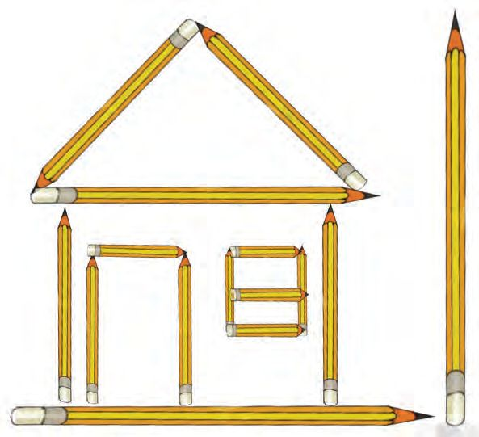
Figure fig_ch05_p063_02 (Page 63)
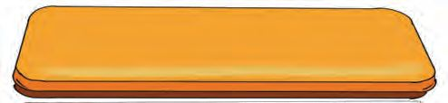
Figure fig_ch05_p063_03 (Page 63)
അള ുകുറി
അലനും കൂ ുകാരും േഗാലി ഉരു ിയ പാതയുെട ചി ം േനാ
വര ാണ് നീളം കൂടുതൽ ?
ാം
ൂ... ഏതു
നി ളുെട ഊഹം
ടിക് () െച ്
അടയാളെ ടു ൂ...
ഓേരാ വരയും
അള ് നീളം
വരയിൽ എഴുതൂ...
ഏെതാെ
െപൻസിൽ ?
െപൻസിലുകൾ െകാ ് അലൻ ഉ ാ ിയ രൂപം േനാ ൂ...
ഏെതാെ െപൻസിലുകൾ താെഴ ത ി ു േബാക്സിൽ വ ാൻ
കഴിയും? െപൻസിലിന് ടിക് () അടയാളം നൽകുക.
െപhസിh രൂപം ക
അളവിൽ മുറിെ ടു
ിേ ? ഇതുേപാെല ഈh ിലുകh rത മായ
് നി ൾ ി മു രൂപ h ഉ ാ ൂ...
63
 Figure fig_ch05_p064_01 (Page 64)
Figure fig_ch05_p064_02 (Page 64)
Figure fig_ch05_p064_03 (Page 64)
Figure fig_ch05_p064_04 (Page 64)
Figure fig_ch05_p064_05 (Page 64)
Figure fig_ch05_p064_01 (Page 64)
Figure fig_ch05_p064_02 (Page 64)
Figure fig_ch05_p064_03 (Page 64)
Figure fig_ch05_p064_04 (Page 64)
Figure fig_ch05_p064_05 (Page 64)
ഗണിതം
രൂപ
ാൻേഡർഡ് - III
ൾ നിർ ി
ാം
നീളം
നി ൾ എടു തിൽ ഒേര നീളമു
ഈh ിhക
ൾ ഉേ ാ?
അവയുെട നീളവും എ വും
പ ികയിൽ എഴുതൂ.
േചh
എ
ം
ുവ ാh
10, 11, 12, 13, 14, 15 െസ ിമീ h വീതമു
മുറിെ ടു ുക. അവ േചh
നീളമു ാകും ?
ഈh
ുവ ാh ആെക എ
ിലുകൾ
െസ ിമീ h
25 െസ ിമീ h നീളം കി ു
േജാടികൾ ഏെതാെ
അള ു കുറി
യാണ് ?
ാം
എെ വീ ിh ഒേര
നീളമു വ ഏെത ാം ?
വ ു
നി ളുെട വീ ിെല
വിവിധ വ ു ളുെട
നീളം അള ൂ.
പ ികെ ടു ൂ.
ഊഹം
ളുെട േപര്
(െസ ിമീ h)
ഒേര നീളമു വ
ഏെത ാം ?
64
അളവ്
(െസ ിമീ h)
 Figure fig_ch05_p065_01 (Page 65)
Figure fig_ch05_p065_02 (Page 65)
Figure fig_ch05_p065_01 (Page 65)
Figure fig_ch05_p065_02 (Page 65)
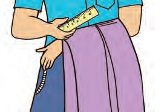
Figure fig_ch05_p065_03 (Page 65)
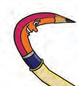
Figure fig_ch05_p065_04 (Page 65)
Figure fig_ch05_p065_05 (Page 65)
Figure fig_ch05_p065_06 (Page 65)
Figure fig_ch05_p065_07 (Page 65)
Figure fig_ch05_p065_08 (Page 65)
Figure fig_ch05_p065_09 (Page 65)
Figure fig_ch05_p065_10 (Page 65)
Figure fig_ch05_p065_11 (Page 65)
അള ുകുറി
വലിയ െ യിൽ
ാം
ഈ െ യിh ഉപേയാഗി ്
അ യുെട സാരിയുെട നീളം
അള ാh യാസമായിരു ു.
െചറിയ െ യിh
ആയതുെകാ േ ?
നമു ് അലെന
സഹായി ാേലാ ?
ടീ h നി ൾ ് േപ hക
ൾ ത ിേ ? നി
ക
ിെ നീളെമ യാണ് ?
എെ
h
് കി ിയ
അള ് കി ിയ നീളം.
ഊഹം.
െസമീ
െസമീ
വ ത നീളമു േപ hക
ൾ കി ിയ അ ുേപർ േചർ ് ൂ ്
ആകൂ... നി ൾ ് കി ിയ േപ hക
ളുെട നീളം പ ികെ ടു ൂ...
മന h
േപര്
ഊഹം
65
അളവ്
 Figure fig_ch05_p066_01 (Page 66)
Figure fig_ch05_p066_02 (Page 66)
Figure fig_ch05_p066_01 (Page 66)
Figure fig_ch05_p066_02 (Page 66)
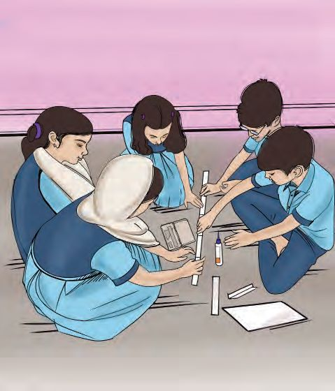
Figure fig_ch05_p066_03 (Page 66)
ഗണിതം
ാൻേഡർഡ് - III
അ
ുേപരുെടയും േപ ർ
ക
ൾ േചർ ് വ ാൽ
ആെക എ നീളം ഉ ാകും?
ഊഹം
നീളം
എ ാ ൂ ിലും കി ിയത്
100 െസ ിമീ h അേ ?
100 െസ ിമീ h എ ത്
1 മീ h ആണ്.
100 െസ ിമീ h = 1 മീ h
മീ ർ സ്െകയിലും
30 െസ ിമീ ർ
സ്െകയിലും ടീ ർ
പരിചയെ ടു ിയേ ാ...
ാസ്മുറിയുെട നീളം
നി ളുെട ാസ്മുറിയുെട
നീളെമ യാണ് ?
ഊഹം
അളവ്
വരാ യുെട നീളേമാ ?
ഊഹം
അളവ്
66
 Figure fig_ch05_p067_01 (Page 67)
Figure fig_ch05_p067_02 (Page 67)
Figure fig_ch05_p067_03 (Page 67)
Figure fig_ch05_p067_04 (Page 67)
Figure fig_ch05_p067_05 (Page 67)
Figure fig_ch05_p067_01 (Page 67)
Figure fig_ch05_p067_02 (Page 67)
Figure fig_ch05_p067_03 (Page 67)
Figure fig_ch05_p067_04 (Page 67)
Figure fig_ch05_p067_05 (Page 67)
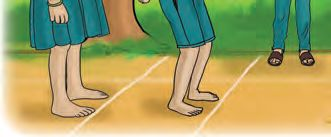
Figure fig_ch05_p067_06 (Page 67)
Figure fig_ch05_p067_07 (Page 67)
അള ുകുറി
നി ളുെട ാ ിെല െബ ്, ഡസ്ക്, േബാhഡ് തുട
ഊഹിെ ഴുതുക, അളെ ഴുതുക.
ഊഹം
െബ
ാം
ിയവയുെട നീളം
അളവ്
്
ഡസ്ക്
േബാhഡ്
നിൽ
ൂ... ചാടൂ...
ഇ ് ചാ മ രമാകാം.
ഓേരാ കു ിയും ഒരു
വരയിൽ നി ി ്
മുേ ാ ു ചാടണം.
പെ ടു വരുെട േപരും
ചാടിയ ദൂരവും എഴുതൂ.
ാന മം
േപര്
ഒരു മീ റിൽ കൂടുതൽ ദൂരം ചാടിയവർ ആെര ാം ?
67
ചാടിയ ദൂരം
(െസ ിമീ ർ)
 Figure fig_ch05_p068_01 (Page 68)
Figure fig_ch05_p068_01 (Page 68)
ാൻേഡർഡ് - III
ഗണിതം
എനി
് കി ിയ സ ാനം
നി ൾ ് എ ാവർ ും ഒരു സ ാനം ഉ ്. എ ാണ് സ ാനം ?
കെ
ു തിനായി പാേ ൺ പൂർ ിയാ ൂ...
250, 275, 300, ........... , ..............
ചുവെടയു
സംഖ കെള പാേ ൺ
മ
ിൽ വര ് േയാജി ി
ൂ...
300
350
250
325
275
ത ിരി
എെ
വര
ചി
ു
വരയുെട നീളം എ യാണ് ?
ഊഹം
എ ാ വരകൾ
അള േ ാഴു
നീളം
ും ഒേര നീളമാേണാ ?
ിന് നിറം െകാടു
ൂ... നി
ൾ
68
് കി ിയ സ ാനം എ ാണ് ?
 Figure fig_ch05_p069_01 (Page 69)
Figure fig_ch05_p069_01 (Page 69)
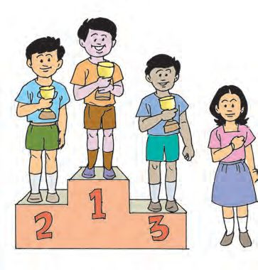
Figure fig_ch05_p069_02 (Page 69)
Figure fig_ch05_p069_03 (Page 69)
അള ുകുറി
ഉയരെമ
ചാ മ
നി ു
ാം
?
ര ിെല വിജയികൾ
ചി ം േനാ ൂ...
എ ാവരും ഒേര
ഉയര ിൽ ആേണാ ?
ിൽ ആരാണ് ?
കൂടുതൽ ഉയര
പ ിക പൂർ
ിയാ
ഉയര
േബാർഡിേല
ൂ...
ൾ
ു
ഊഹി
അളവ്
അള േ ാൾ
കി ിയത്
ഉയരം
സ ി ് േബാർഡിേല ു
ഉയരം
ജനൽ പടിയിേല
ഉയരം
വാതിലിെ
ു
ഉയരം
േമശയുെട ഉയരം
ാസ്മുറിയുെട ഉയരം എ യാണ് ? എ
നി
ളുെട
എെ
ഊഹം
അള ു കി ിയത്
എെ
ഉയരം
69
െന അള
ും ?
 Figure fig_ch05_p070_01 (Page 70)
Figure fig_ch05_p070_01 (Page 70)
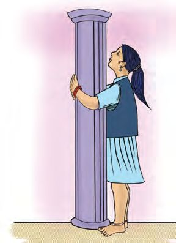
Figure fig_ch05_p070_02 (Page 70)
Figure fig_ch05_p070_03 (Page 70)
Figure fig_ch05_p070_04 (Page 70)
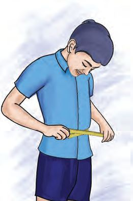
Figure fig_ch05_p070_05 (Page 70)
ഗണിതം
നി
ാൻേഡർഡ് - III
ൾ അള വയിൽ
ഒരു മീ റിൽ കൂടുതൽ ഉയരമു
വ ഏെതാെ
യാണ് ?
ആ അളവുകെള മീ റിലും െസ ിമീ റിലുമായി എഴുതി പ ിക
പൂർ ിയാ ൂ...
ഉയരം
വ ു
ചു ും അള
മീ റിലും െസ ിമീ റിലും
െസ ിമീ റിൽ
ാം
തൂണിെ വ ം
എ യാണ് ?
ഇതുേപാെല നി ളും
അള ൂ...
എെ ാെ
വാ ർേബാ ിലിന്
ചു ും.
അള
ാം ?
േമശയുെട മുകൾ
ഭാഗ ിന് ചു ും.
70
ൈകയുെട
വ ം.
 Figure fig_ch05_p071_01 (Page 71)
Figure fig_ch05_p071_01 (Page 71)
 Figure fig_ch05_p071_02 (Page 71)
Figure fig_ch05_p071_03 (Page 71)
Figure fig_ch05_p071_04 (Page 71)
Figure fig_ch05_p071_05 (Page 71)
Figure fig_ch05_p071_06 (Page 71)
Figure fig_ch05_p071_02 (Page 71)
Figure fig_ch05_p071_03 (Page 71)
Figure fig_ch05_p071_04 (Page 71)
Figure fig_ch05_p071_05 (Page 71)
Figure fig_ch05_p071_06 (Page 71)
അള ുകുറി
ാം
ആെക നീളം
ഈർ ിലുകൾ മുറിെ ടു ് ചതുരം ഉ ാ ൂ.
അതിന് ഉപേയാഗി ഈർ ിലുകളുെട ആെക
നീളം എ യാണ് ?
ഈർ ിലുകൾ മുറിെ ടു
ഉ ാ ൂ. ഈർ ിൽക
എ യാണ് ?
് ിേകാണം
ളുെട ആെക നീളം
ഒേര നീളമു ഈർ ിലുകൾ മുറിെ ടു ും
ചതുരമു ാ ൂ. ഈർ ിൽക
ളുെട ആെക
നീളം എ യാണ് ?
ഒേര നീളമു ഈർ ിൽക
ൾ െകാ ്
ിേകാണമു ാ ൂ. ഈർ ിൽക
ളുെട ആെക
നീളം എ യാണ് ?
തീവ
ി
ളി
നമു ്
തീവ ി ളി
കളി ാേലാ ?
തീവ ി ളി ായി അലനും കൂ രും 350 െസ ിമീ ർ വീതം നീളമു
നീല റിബണും ഒരു ചുവ ് റിബണും വാ ി.
റിബണിെ ആെക
നീളം എ യാണ് ?
71
ഒരു
 Figure fig_ch05_p072_01 (Page 72)
Figure fig_ch05_p072_01 (Page 72)
ഗണിതം
ാൻേഡർഡ് - III
അവർ വളയമു ാ ാനായി റിബണുകൾ േചർ
20 െസ ിമീ ർ കുറ
ു.
അതിെ
് െക ിയേ ാൾ നീളം
നീളം എ യാണ് ?
േചാദ ം വായി ്
എനി ് മന ിലായത്.
ഞാൻ െച
ഉ രം കണ ാ ാൻ
ആവശ മായ കാര ൾ.
ിയാരീതി.
കി ിയ ഉ
രം.
വളയ ിൽ എ ാവർ ും നിൽ ാൻ കഴിയാ തുെകാ ് അവർ
6 മീ ർ വീതം നീള ിൽ നീല റിബണും ചുവ ് റിബണും വാ ി.
ര
് റിബണിനും കൂടി എ
നീളം ?
ഒരു മീ ർ റിബണിന് പ ് രൂപയാണ് വില. അേ ാൾ തീവ
ായി വാ ിയ റിബണിന് ആെക എ രൂപയായി ?
72
ി
ളി
 Figure fig_ch05_p073_01 (Page 73)
Figure fig_ch05_p073_01 (Page 73)
 Figure fig_ch05_p073_02 (Page 73)
Figure fig_ch05_p073_02 (Page 73)
 Figure fig_ch05_p073_03 (Page 73)
Figure fig_ch05_p073_03 (Page 73)
 Figure fig_ch05_p073_04 (Page 73)
Figure fig_ch05_p073_04 (Page 73)
 Figure fig_ch05_p073_05 (Page 73)
Figure fig_ch05_p073_05 (Page 73)
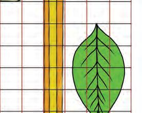
Figure fig_ch05_p073_06 (Page 73)
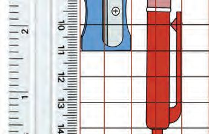
Figure fig_ch05_p073_07 (Page 73)
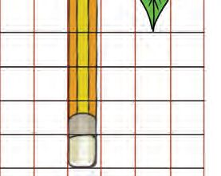
Figure fig_ch05_p073_08 (Page 73)
Figure fig_ch05_p073_09 (Page 73)
അള ുകുറി
വിലയിരു
ൽ
വർ
ാം
നം
1. നീളം കൂടുതൽ
ഇവയിൽ
ഏതിനാണ്
കൂടുതൽ നീളം ?
എ യാണ്
നീളം ?
വ ു
2.
A
ളുെട േപരും നീളവും
B
C
D
ചുവെട നൽകിയിരി
E
F
മമായി എഴുതൂ...
G
H
I
J
K
L
M
N
ു തിൽ ഏ വും കൂടിയ നീളം ഏതാണ് ?
i.
A മുതൽ F വെര
ii.
B മുതൽ J വെര
iii.
J മുതൽ N വെര.
iv.
E മുതൽ K വെര
73
O
P
 Figure fig_ch05_p074_01 (Page 74)
Figure fig_ch05_p074_01 (Page 74)
ഗണിതം
ാൻേഡർഡ് - III
3. തുല മായ നീളം
• ഈർ ിൽക
ൾ മുറിെ ടു ് നി ളുെട ഗണിത
പാഠപു ക ിെ അളവിൽ ഉ ചതുരം ഉ ാ ൂ...
• അവയിൽ ഒേര നീളമു
ഈർ
ിലുകൾ ഉേ
നീളം
• ഈർ
എ
ാ?
ം
ിലുകളുെട ആെക നീളം എ യാണ് ?
4. സാരിയുെട നീളം
അ വാ ിയ സാരിയുെട നീളം 6 മീ ർ. അതിൽ നി ്
70 െസ ിമീ ർ ൗസിനായി മുറിെ ടു ു.
ബാ
ി നീളം എ
?
െസ ിമീ റിൽ എഴുതൂ...
74